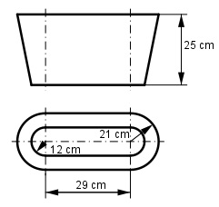

Aufgabe 289 Wie groß ist das Volumen V des in der Vorder- und Draufsicht dargestellten Zeitungsständers?

V = Trapezprisma P + Kegelstumpf K л * h K = -------- * (r12 + r1 * r2 + r22) 3 л * 25 K = -------- * (122 + 12 * 21 + 212) cm3 3 л * 25 K = -------- * (144 + 12 * 21 + 441) cm3 3 K = 21 901 cm3 = 21,9 dm3 42 cm + 24 cm P = ---------------- * 25 cm * 29 cm = 2 = 23 925 cm3 = 23,9 dm3 V = P + K = 23,9 dm3 + 21,9 dm3 = 45,8 dm3